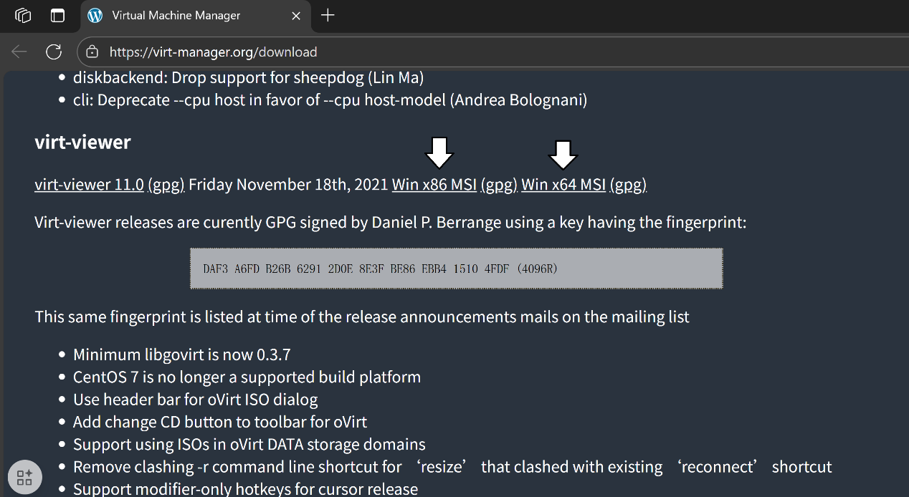

1. 下载SPICE
点击这里访问SPICE官网，在"Windows installers"下点击Virtual Machine Manager
来到下载页面向下翻，找到"virt-viewer"，如果你是x64位的操作系统就点击"Win x64 MSI"，如果你是x86的操作系统则要点击Win x86 MSI"

本指南将帮助您在Proxmox VE虚拟化环境中配置SPICE协议，实现音频和USB设备的硬件直通
在PVE里当你装好Windows然后突然发现：咦？我的虚拟机怎么没有声音？
这是因为，如果不做其他设置的情况下我们没有添加声音设备。
但是就算我们添加了声音设备也会发现仍然没有声音，想给它接一个音响但又不知道向哪里接。
要解决这个问题我推荐使用SPICE控制台。
当你在互联网上搜索"给PVE上的windows用的SPICE"时你会发现一篇PVE官方的文章，由于它是英文的，对一些人不那么友好（比如说作者我），所以你按我说的做方法和那篇文章是一样的。原文链接我放在文章的最后了，感兴趣的大佬们可以去看一下。
原文第一部分是介绍，具体内容如下：
“（Simple Protocol for Independent Computing Environments）是一种为虚拟环境构建的开放式远程计算解决方案，允许用户查看计算"桌面"环境。将Spice集成到Proxmox VE中，为与键盘、鼠标、音频和视频等虚拟化桌面设备交互提供了解决方案。前端和后端之间的交互是使用虚拟设备接口（VDI）完成的。
Spice实现了类似于与本地计算机交互的用户体验。它适用于LAN和WAN使用，而不会影响用户体验。
在Proxmox VE上使用Spice既简单又安全。它集成在集群环境、用户和身份验证系统中，当然，所有流量都是完全加密的。
Spice首次与Proxmox VE 3.1一起引入。”
如你所见这是官方的说法。
别着急，我们一步一步慢慢来。
点击这里访问SPICE官网，在"Windows installers"下点击Virtual Machine Manager
来到下载页面向下翻，找到"virt-viewer"，如果你是x64位的操作系统就点击"Win x64 MSI"，如果你是x86的操作系统则要点击Win x86 MSI"
如果出现磁盘驱动器的警告，请允许它们。
到这里就只剩最后一步了。
当然，你也可以不添加USB设备和音频设备，它们不是必须的。
虚拟机开机时点击控制台的那个箭头，你会发现我们可以选择SPICE了。
如果你无法选择SPICE，那么请回去检查那里是不是哪里搞错了。
如果你有好的建议或意见请联系我们：